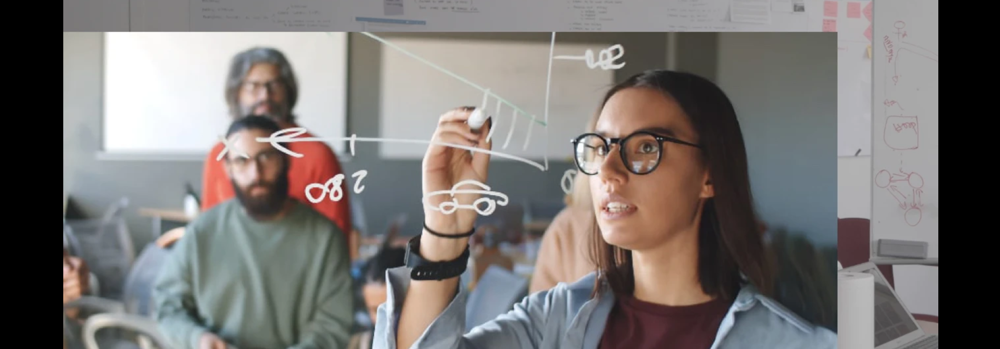

Innovation Lab
Bootcamp d’innovation interdisciplinaire, de l’analyse d’un problème complexe au prototypage fonctionnel. Des formations gratuites grâce à nos partenaires.

Concept de l’Innovation Lab
Interdisciplinaire
-
Chaque promotion est interdisciplinaire et réunit des profils variés issus des métiers du design, des technologies, des sciences sociales, de l’entreprenariat.
Responsable
- L’innovation Lab place l’impact sociétal au coeur de ses objectifs, et propose des enseignements qui ouvrent vers des modèles de circularité, de décentralisation, de co-design et d’eco-conception.
Concret
- Chaque lab travaille sur une thématique spécifique, et explore des problématiques concrètes identifiées avec les partenaires professionnels de la Plateforme.
Métiers
- La finalité du lab est de former des chefs de projets capable de travailler dans différents environnements, d’apporter une analyse complexe des problématiques et de piloter la recherche de solutions innovantes par le design centré usagers